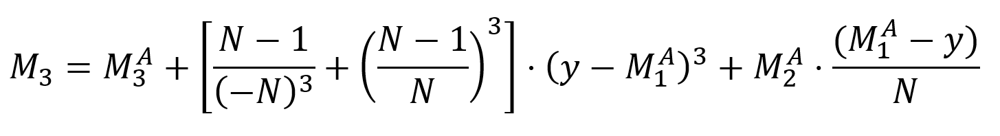

05 - Incremental computation of moments¶
1. Introduction¶
In this exercise we want to begin getting a working knowledge of NEON SIMD inmstructions. We do this using a simple data reduction example, an online-calculation of moments of a statistical distribution.
No points will be awarded for completion of this laboratory exercise. You can do this exercise in groups. One laboratory period (1.5 hrs.) is considered adequate for this exercise
2. Learning Aims¶
The format and usage of ARM-NEON intrinsic instructions
Online statistical calculations
3. Task 1: Compute the Third Moment¶
Recommended ET & IT
Moments¶
Central moments are widely used in descriptive statistics. Standard approaches for computing them require two passes over the data. In applications were were data is streamed incremental results are needed after each new value is observed.
The first moment (mean) is given by
The second moment (variance) of a distrubtion is given by
The third moment (skew) is given by

The nth moment (kurtosis … ) of a distrubtion is given by

Task¶
The example generates samples with a given Gaussian distribution. For each sample the new moments are calculated normally (compute_moments_neon) and with SIMD (compute_moments_neon). The compute_moments_neon function is incomplete as the third moment is not yet implemented.
Examine the given source code and answer the following questions:
How many dataset are calculated in parallel when using SIMD?
Is the number of datasets given when using SIMD (check the ARM Neon reference)?
The example can be build using `make’
Currently only the first two moments are calculated
Compare the calculation of the first two moments to the implementation in
compute_momentsand identify the used intrinsics.Write the calculation of the third moment in the
computes_moments_neonfunction. You can use acompute_momentsfunction as a blueprint. Don not forget to check if you have to add load and store instruction at the start or the end of the function.Compare your results of the two implementations. Are there differences?
Is there any run-time improvement to be expected by using openMP?
4. Evaluation¶
This laboratory is not evaluated Nevertheless I welcome in-depth discussions on the contents of the lab and your solutions during the implementation process.
5. References¶
https://developer.arm.com/architectures/instruction-sets/simd-isas/neon/intrinsics
6. Version¶
Version |
Date |
By |
Comments |
Class Level |
Module |
|---|---|---|---|---|---|
V1.1 |
04.2022 |
donn |
Added some sections |
6S |
MPC |
V1.0 |
02.2021 |
donn |
First version |
6S |
MPC |